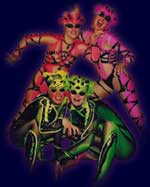

|
|
|
»Applaus brandet auf, als ranke, schlanke Revuedamen ihre
Pfauenräder auffächern und durchtrainierte Taucherinnen im hydraulisch hochgefahrenen
Schwimmbassin zum Wasserballett in die Fluten tauchen.« |
|
[Berliner Morgenpost März 1999] |

|
|
»Das Premierenpublikum (darunter Eberhard Diepgen) machte
Ah und Oh, als Artisten im Laserlicht im Aquarium untertauchten.« |
|
[BZ März 1999] |
|
|
»Und aus der Versenkung fährt wahlweise eine Eislauffläche
empor oder ein Wasserbecken mit sprudelndem Fontänenzauber und bestückt mit körperbetont
gekleideten Unterwassernixen von der eigens engagierten Schwimmtruppe.« |
 |
|
[Der Spiegel März 1999] |
|
|
»Höhepunkt: das legendäre Wasserbassin. In dem Becken,
das mit 180000 Liter auf exakt 33 Grad erwärmtem Wasser gefüllt wird, schwimmen
Tänzerinnen ein atemberaubendes Wasser-Ballett.« |
|
[Super Illu März 2000] |
|
|
»Neben den Gesangssolisten bereichern erstklassige Artisten mit
atemberaubenden Kunststücken die Show. Die Ayak Brother begeistern am Trapez, Fattini
zeigt Äquilibristik auf einer schwingenden Laterne, Claudia Denniel jongliert, das China
Art Ensemble präsentiert meisterhafte Bodenakrobatik und das Wasserballett verblüfft
durch die Exaktheit und Anmut des Synchronschwimmens.« |
|
[Berlin Programm Oktober 2000] |
|
|
»So zeigte das Wasserballett "Aqua de Luna" sein Können.
Die Nixen aus dem Berliner Friedrichsstadt-Palast waren auch schon bei Jürgen Lippes Show
"Geld oder Liebe" in der ARD zu sehen. Sie begeisterten das Publikum mit einer perfekt
choreographierten Vorstellung. Manch einer versuchte später, das gleiche zu machen, aber es
blieb bei den Versuchen.« |
|
[Schwäbische Donau Zeitung April 2001] |
|